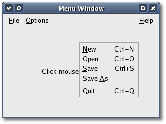
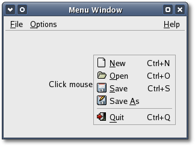

You can either use Gtk::Container::add() to
add
the new menubar to a window, or the Gtk::Box
The 'accel_group' argument is the
accelerator group which holds the global accelerators for this menu.
The
first constructor creates the accelerator group for you which can be
retrieved by calling:
Gtk::AccelGroup*
get_accel_group() const;
The next three constructors are used to create menu items that are
packed into menubars and menus:
MenuItem();
MenuItem(const String& label, bool
use_underline = false);
MenuItem(const String& label,
Gtk::Menu& submenu, bool
use_underline
= false);
The 'label' argument is the menu item
text, 'submenu'
is a menu to associate with the menu item and 'use_underline
',
if true
, specifies that label should be parsed for
the
mnemonic character. The first constructor creates an empty menu item,
the second constructor creates a menu item with a label already packed
into it and the last constructor creates a menu item that displays
another menu when activated.
There are other more specialized
menu items
which can be used to construct menus. ImageMenuItem displays an image
next to the text string. CheckMenuitem displays a checkbutton that can
be in an active or inactive state. RadioMenuItem displays a radiobutton
as part of a group which only allows one active menu item at a time.
SeparatorMenuItem displays a separator line in the menu and
TearoffMenuItem allows its menu to be torn off and displayed in a
separate window.
Once you have created a menu item you have to put it into a menu. This
is
done using one of the Gtk::MenuShell methods: append, prepend or
insert. There are several indentical overloaded methods for each. These
are the append methods:
void append(MenuItem& item);
void
append(MenuItem& item, const
sigc::slot<void>& callback);
void
append(MenuItem& item, const
AccelKey& accel_key, const
sigc::slot<void>& callback);
void
append(MenuItem& item, const
AccelKey& accel_key, AccelGroup& accel_group, const
sigc::slot<void>& callback);
void append(const StockId& stock_id, const
sigc::slot<void>& callback);
void
append_separator();
The 'item' argument is the menu item to add, 'callback' is the slot
function to be called if the menu item is activated, 'accel_key' is the
accelerator key for the menu item, 'accel_group' is the accelerator
group to add the accelerator key to, and 'stock_id' is the identifier
of the stock menu item to add. The last method, append_separator(), is
a convenience method that creates and appends a separator for you.
In order to capture when a menu item is selected by the user, you
need to connect a callback slot to the item's 'activate'
signal.
If you use the first append method you will have to make this
connection yourself. If you pass a valid slot to one of the other
append methods, append() will make this connection for you.
For example, if you wanted to create a
standard File menu, with the options File, Save, and Quit, the code
would look like this:
Gtk::Menu
*file_menu = new Gtk::Menu;
// Create menu items
Gtk::MenuItem *item = new
Gtk::Menu("Open");
file_menu->append(*item, sigc::mem_fun(this,
&MyWindow::on_file_open));
item = new Gtk::Menu("Save");
file_menu->append(*item, sigc::mem_fun(this,
&MyWindow::on_file_save));
item = new Gtk::Menu("Quit");
file_menu->append(*item, sigc::mem_fun(this,
&MyWindow::on_file_quit));
// Show all the menu items
file_menu->show_all();
At this point you have a menu. Now
you need
to
create a menubar and a menu item for the File menu. The code looks like
this:
Gtk::MenuBar
*menubar = new Gtk::MenuBar
window->add(*menubar);
Gtk::MenuItem *file_item = new
Gtk::MenuItem("File", *file_menu);
menubar->append(*file_item);
file_item->show();
menubar->show();
If you wanted the menu right
justified on
the
menubar, such as help menus often are, you would use the following
Gtk::MenuItem method on the menu item before attaching it to the
menubar.
void
set_right_justified(bool right_justified);
Here is a summary of the steps needed to create a
menu bar with menus attached:
- Construct a new menu.
- Construct multiple menu items and use
Gtk::MenuShell::append() to
add each of these new items to the menu.
- Construct a menu item that will be the root of the menu,
the text
appearing here will be on the menubar itself.
- Pass a reference to the menu, to the root menu item
constructor
(the one created in the above step).
- Construct a new menubar. This step only needs to be done
once
when creating a series of menus on one menu bar.
- Use Gtk::MenuShell::append() to put the root menu onto the
menubar.
Applications can display a Menu as a popup menu by calling the
Gtk::Menu::popup() method:
void popup(unsigned int button, unsigned
int activate_time =
GDK_CURRENT_TIME);
The 'button' argument is the button which was pressed to initiate the
event and 'activate_time' is the time at which the event occurred. This
method positions the popup menu at the current pointer position. There
are two other popup() methods with extended options that give you more
control over where the popup menu will appear.
You can create a popup menu by explicitly calling popup() from a
'button_press_event' signal handler, which has the following prototype:
bool
MyWindow::event_handler(const
Gdk::EventButton& event);
For example, to connect to a
'button_press_event'
and use its event argument to find out where to pop up the menu, take
these steps. Connect to a slot with the following extended prototype:
bool
MyClass::event_handler(const
Gdk::EventButton& event, Gtk::Menu *menu);
Use sigc::bind() to bind a pointer to the menu, to your slot:
sigc::bind(sigc::mem_fun(this,
&MyWindow::event_handler), menu);
where 'menu' is the bound menu pointer.
Remember that bound data is always passed as the last argument to the
bound
method, unless otherwise specified. This would pass the bound data as
the first argument:
sigc::bind<0>(sigc::mem_fun(this,
&MyWindow::event_handler), menu);
in which case your slot would have this extended prototype:
bool
MyClass::event_handler(Gtk::Menu
*menu, const
Gdk::EventButton& event);
Using the first prototype, if the event is a mouse button press, treat
the
event as a button event (which it is) and use it as shown in the
following code to pass information to Gtk::Menu::popup():
bool
MyClass::event_handler(const
Gdk::EventButton& event, Gtk::Menu *menu)
{
menu->popup(event.button(), event.time());
// return true to
indicate event has been handled
return true;
}
Menu
Example
Let's take a look at a menu example that implements all of the above
features. The header file for this example is <menu.hh>:
#include <xfci/main.hh>
#include <xfc/gtk/menu.hh>
#include <xfc/gtk/window.hh>
using namespace Xfc;
class MenuWindow : public Gtk::Window
{
MenuWindow(const
MenuWindow&);
MenuWindow& operator=(const
MenuWindow&);
protected:
bool
on_button_press(const
Gdk::EventButton& event, Gtk::Menu *menu);
public:
MenuWindow();
virtual ~MenuWindow();
void
menu_item_selected(const char *parent, const
char *item);
void on_file_new();
void on_file_open();
void on_file_save();
void on_file_save_as();
void on_file_quit();
void
on_options_preferences();
void on_help_about();
};
and the source file is <menu.cc>:
#include "menu.hh"
#include <xfc/gtk/accelgroup.hh>
#include <xfc/gtk/box.hh>
#include <xfc/gtk/eventbox.hh>
#include <xfc/gtk/label.hh>
#include <xfc/gtk/menubar.hh>
#include <xfc/gtk/menuitem.hh>
MenuWindow::MenuWindow()
{
set_title("Menu Window");
set_size_request(300, 200);
// Boxes don't
receive
button events so use an eventbox. The eventbox is added first
// and then all the other widgets added to it.
Gtk::EventBox *eventbox = new
Gtk::EventBox;
add(*eventbox);
// Set the events
the
eventbox is to receive. These can be any number of or'd (|) values
// from the Gdk::EventMask enumeration.
eventbox->set_events(Gdk::BUTTON_PRESS_MASK);
// Add the packing box to
eventbox
Gtk::VBox *vbox = new
Gtk::VBox(false, 1);
vbox->set_border_width(1);
eventbox->add(*vbox);
// Create the
menubar.
Menus can be created by using the append, prepend or insert methods
// in menushell.hh to add menu items.
Gtk::MenuBar *menubar = new Gtk::MenuBar;
Gtk::AccelGroup *accel_group = add_accel_group();
// Create the File
menu
Gtk::Menu *menu = new
Gtk::Menu(*accel_group);
menu->append(*(new
Gtk::MenuItem("_New", true)),
"<control>N", slot(this,
&MenuWindow::on_file_new));
menu->append(*(new
Gtk::MenuItem("_Open", true)),
"<control>O", slot(this,
&MenuWindow::on_file_open));
menu->append(*(new
Gtk::MenuItem("_Save", true)),
"<control>S", slot(this,
&MenuWindow::on_file_save));
menu->append(*(new
Gtk::MenuItem("Save _As", true)), slot(this,
&MenuWindow::on_file_save_as));
menu->append_separator();
menu->append(*(new
Gtk::MenuItem("_Quit", true)),
"<control>Q", slot(this, &MenuWindow::on_file_quit));
menubar->append(*(new
Gtk::MenuItem("_File", *menu, true)));
// Bind the file
menu to
the button_press event and use it as the popup menu.
eventbox->signal_button_press_event().connect(sigc::bind(sigc::mem_fun(this,
&MenuWindow::on_button_press), menu));
// Create Options
menu
menu = new
Gtk::Menu;
menu->append(*(new
Gtk::MenuItem("_Preferences", true)),
slot(this,
&MenuWindow::on_options_preferences));
menubar->append(*(new Gtk::MenuItem("_Options",
*menu, true)));
// Create Help menu
menu = new
Gtk::Menu;
menu->append(*(new
Gtk::MenuItem("About")), slot(this,
&MenuWindow::on_help_about));
Gtk::MenuItem *menu_item = new
Gtk::MenuItem("_Help", *menu, true);
menu_item->set_right_justified(true);
menubar->append(*menu_item);
// Pack the
menubar into
the vbox
vbox->pack_start(*menubar, false);
// Add a label that tells the
user to click the mouse button inside the client area.
Gtk::Label *label = new Gtk::Label("Click mouse
button here...");
vbox->pack_start(*label);
// Being lazy,
just show
everything with one call.
show_all();
}
MenuWindow::~MenuWindow()
{
}
bool
MenuWindow::on_button_press(GdkEventButton *event, Gtk::Menu *menu)
{
menu->popup(event->button, event->time);
return true;
}
void
MenuWindow::menu_item_selected(const char
*parent, const char *item)
{
g_message("Menu: activated the \"%s\" menu item:
\"%s\"", parent, item);
}
void
MenuWindow::on_file_new()
{
menu_item_selected("File", "New");
}
void
MenuWindow::on_file_open()
{
menu_item_selected("File", "Open");
}
void
MenuWindow::on_file_save()
{
menu_item_selected("File", "Save");
}
void
MenuWindow::on_file_save_as()
{
menu_item_selected("File", "Save As");
}
void
MenuWindow::on_file_quit()
{
dispose();
}
void
MenuWindow::on_options_preferences()
{
menu_item_selected("Options", "Preferences");
}
void
MenuWindow::on_help_about()
{
menu_item_selected("Help", "About");
}
XFC_MAIN(MenuWindow)
Compiling Menu
If you compiled and installed XFC yourself, you will find the source
code for Menu in the
<examples/howto/menu> source directory along with a Makefile. If
XFC came pre-installed, or you installed it from an RPM package, you
will
find the source code in the
</usr/share/doc/xfcui-X.X/examples/howto/menu> subdirectory. In
this case you will have to create the Makefile yourself (replace X.X
with the
version number of the libXFCui library you have installed).
To create a Makefile for Menu, add the following lines to a new
text
file
and save it using the name "Makefile":
CC = g++
CFLAGS = -Wall -O2
menu: menu.cc menu.hh
$(CC) menu.cc -o menu $(CFLAGS) `pkg-config
xfcui-X.X --cflags --libs`
clean:
rm -f *.o menu
If you cut and paste these lines make sure the whitespace before $(CC)
and rm is a tab character. When you
compile and run this program you will see the following window appear:

The window displays a menubar across the top
that contains three menu items: File, Options and Help.
When
you click a mouse button down anywhere inside its client area the
menubar's File menu pops up at the current pointer position.
Stock Menu Example
There is a second menu example in the <examples/howto/menu>
subdirectory that creates the same window as
above but instead uses stock menu items and their icons. Except for the
menu creation code in the MenuWindow constructor the source
code in <stock.cc> is the same:
// Create the menubar. Menus can be
created by using the append, prepend or insert methods
// in menushell.hh to
add menu items.
Gtk::MenuBar *menubar = new
Gtk::MenuBar;
Gtk::AccelGroup *accel_group = add_accel_group();
// Create the File menu
Gtk::Menu *menu = new
Gtk::Menu(*accel_group);
menu->append(Gtk::StockId::NEW, sigc::mem_fun(this,
&MenuWindow::on_file_new));
menu->append(Gtk::StockId::OPEN, sigc::mem_fun(this,
&MenuWindow::on_file_open));
menu->append(Gtk::StockId::SAVE, sigc::mem_fun(this,
&MenuWindow::on_file_save));
menu->append(Gtk::StockId::SAVE_AS, sigc::mem_fun(this,
&MenuWindow::on_file_save_as));
menu->append_separator();
menu->append(Gtk::StockId::QUIT,
sigc::mem_fun(this,
&MenuWindow::on_file_quit));
menubar->append(*(new
Gtk::MenuItem("_File", *menu, true)));
// Bind the file menu
to the button_press event and use it as the popup menu.
eventbox->signal_button_press_event().connect(sigc::bind(sigc::mem_fun(this,
&MenuWindow::on_button_press), menu));
// Create Options menu
menu = new
Gtk::Menu(*accel_group);
menu->append(Gtk::StockId::PREFERENCES, sigc::mem_fun(this,
&MenuWindow::on_options_preferences));
menubar->append(*(new
Gtk::MenuItem("_Options", *menu, true)));
// Create Help menu
menu = new Gtk::Menu;
Gtk::MenuItem *menu_item = new
Gtk::ImageMenuItem(*(new Gtk::Image(Gtk::StockId::DIALOG_INFO,
Gtk::ICON_SIZE_MENU)), "_About", true);
menu->append(*menu_item, sigc::mem_fun(this,
&MenuWindow::on_help_about));
menu_item = new
Gtk::MenuItem("_Help", *menu, true);
menu_item->set_right_justified(true);
menubar->append(*menu_item);
Compiling Stock
To create a Makefile for Stock, add the following lines to a new
text
file
and save it using the name "Makefile":
CC = g++
CFLAGS = -Wall -O2
stock: stock.cc menu.hh
$(CC) stock.cc -o stock $(CFLAGS) `pkg-config
xfcui-X.X --cflags --libs`
clean:
rm -f *.o stock
If you cut and paste these lines make sure the whitespace before $(CC)
and rm is a tab character. When you
compile and run the Stock program you will see the following window
appear:

The XFC_MAIN macro is a convenience macro that writes a simple main
function, its only argument is the name of the main window class. The
macro is defined in <xfc/main.hh> as:
#define XFC_MAIN(MainWidget)\
int main (int argc, char *argv[])\
{\
Xfc::Main::init(&argc,
&argv);\
MainWidget main_widget;\
main_widget.signal_destroy().connect(sigc::ptr_fun(&Xfc::Main::quit));\
main_widget.show();\
Xfc::Main::run();\
return 0;\
}
Most main functions in C++ are simple because all the
creation work for the main window is done inside its constructor, not
the main function.